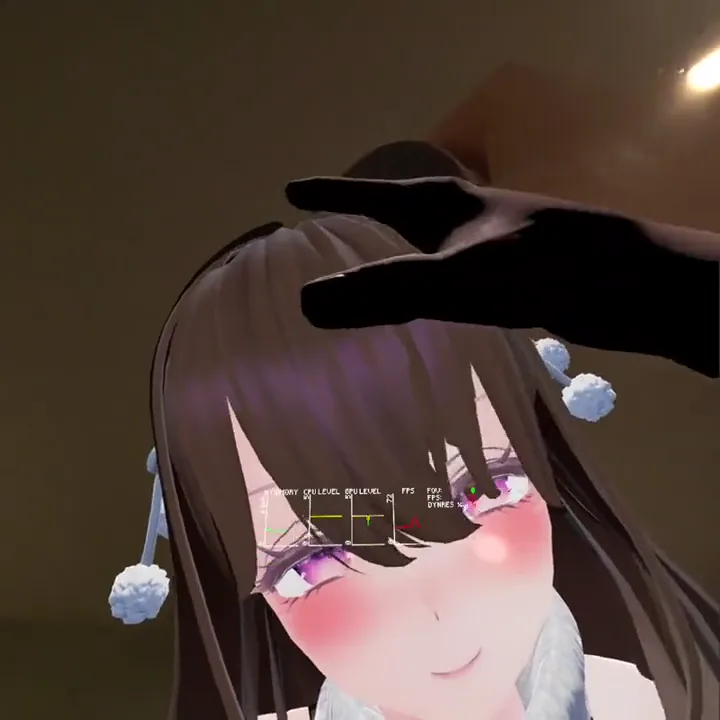

Play Guide
游玩指南
建议先玩游戏内的教程。卡关或想了解更多玩法时，只看需要的部分即可。
本指南以正式版ver1.2.0为准。
部分操作视频录制于旧版本。如果菜单外观不同，请以本指南的说明为准。
01
Introduction
简介
人气网红「天音ミライ」（Amane Mirai）
我是在社交媒体上发现她的。
每天更新的日常照片。宽敞的独栋住宅，优雅的生活。
完美的自拍背后，是一件件高档的家具陈设。
她过着人人向往的生活，而我对她的执念一天比一天深。
镜头另一边那个真实的她，让我怎么也放不下。
她真的过着照片里那样的生活吗？
终于，我还是查到了她的住址。
我原本只是想在附近默默看着她。
可是，每天从她家门前经过，这份心思渐渐变了形……
就在今晚，我要亲眼看看社交媒体上看不到的、她真实的模样——


游戏目标
- 本作的目标是潜入女孩的家，“将她据为己有”。
- 她戒备心很强，需要用特殊的方法。
- 避开她的视线寻找关键道具，谨慎推进计划。
- 视你的行动而定，或许能打开她的心扉。
本页已控制露骨内容，请在游戏中亲自体验。
4种模式

教程
- 学习基本操作
- 背包的用法
- 摄像头的安装方法
- 新手务必先玩

故事模式
- 主要游戏模式
- 潜入＆探索动作
- 道具收集要素
- 保存服装与发型的收集进度

自由模式
- 通关故事模式后解锁
- 无时间限制
- 用棒自由亲密互动
- 更换服装＆发型

MR模式
- 获得特定道具后解锁
- 将她召唤到现实房间
- Quest3/3S支持空间识别
- 可切换3种状态
02
Controls
基本操作


调整视线高度
按住双手扳机键，上下移动手柄。
收纳道具

背包
- 手伸向背后，按握持键抓住背包
- 拿到眼前即可查看内容
- 12个收纳格＋左右两侧各1个格子
腕部快捷槽（左手腕）
- 可收纳1件常用道具
- 放入监视器可随时查看画面
移动物体
门、抽屉、衣柜
- 开关门：转动把手后拉/推
- 抽屉：抓住把手往外拉
- 衣柜：手扶柜门开关
门和抽屉有时不按握持键、直接用手推/拉更顺手
特殊互动
- 内裤：按握持键抓住往下拉
- 胸罩：按握持键抓住拨开
防晕设置
在菜单的「酔い設定」（防晕设置）中，可分别调整以下项目。
- 暗角效果 调整移动时视野边缘变暗的强度。
- 蹲下与转向 可选择瞬间切换或平滑移动。


03
Game Modes
各模式详解
故事模式
1. 潜入住宅
用隐藏摄像头确认位置，伺机潜入
2. 搜寻道具
搜查抽屉和衣柜
3. 执行计划
活用道具，有策略地行动
探索技巧
活用监视器
随时确认她的位置，观察行动规律
留意脚步声
凭脚步声判断她是否在附近
留意心跳声
心跳声会随与她的距离变化
谨慎探索
蹲着移动不易被发现
收集道具一览
服装（共5种）


发型（共4种）


游戏结束时的注意事项
- 从潜入前重新开始
- 背包内容重置
- 服装和发型的收集进度保留
吸取上次的经验，更加谨慎地行动吧
- 无时间限制，自由亲密互动
- 可更换服装和发型
- 通过各处的传送门体验多种体位
传送门位置
- 12客厅2处
- 3卧室1处
- 4洗衣房1处
- 5淋浴间1处
亲密互动
接吻
把脸凑近，她会自然地吻你
摸头
摸摸她的头，她会露出害羞的样子
牵手
抓住她的手，可带她去想去的地方
棒 抓住即可插入
换装
- 取出道具 从背包取出服装或发型
- 更换造型 手持服装贴到她的身体上，或将发型贴到她的头部。
- 如需脱下服装 使用剪刀。换装前不必先脱下当前服装。

此表说明本作MR模式可使用的功能。
| 机型 | 透视 | 空间识别 |
|---|---|---|
| Quest 3/3S | 支持彩色透视 | 高精度空间识别 |
| Quest Pro | 支持彩色透视 | 不支持 |
| Quest 2 | 仅黑白透视 | 不支持 |
| PCVR | 通过色度键（绿幕）实现 | — |
PCVR可享受高画质。
切换角色状态
普通状态
- 自行站立的基本姿势
瘫软＋无重力
- 全身瘫软
- 可自由摆姿势
- 移动位置后仍悬浮
瘫软＋重力
- 完全瘫软
- 受重力影响
- 自然地躺在家具上
推荐玩法
- 让她躺在床上陪睡
- 让她坐在椅子上亲热
- 瘫软＋无重力，抱起来亲热
- 瘫软＋重力，趁她毫无防备时亲热
PCVR版的MR设置
MR模式下背景为绿色空间。用Virtual Desktop抠掉绿色，替换成现实画面。
- 打开STREAMING菜单
- 在“VR Passthrough”中开启“Environment”
- 点击右侧的Config按钮
- 输入推荐参数
- Red
- 0
- Green
- 255
- Blue
- 0
- Similarity
- 25%
- Smoothness
- 20%
- Opacity
- 100%

Quest 3/3S的空间识别设置
- 在Quest设置中打开空间设置，登记房间形状。
- 允许MRsecretVR访问空间数据。
- 启动游戏并进入MR模式。
- 房间加载完成后，在菜单中开启空间识别（空間Mesh）。
开启后会短暂显示房间形状。若显示「非対応」（不支持），请查看空间识别检查步骤。
04
Tips
小知识与技巧
关于「もっちりシェーダー」
- 正式采用在VR社交平台上很受欢迎的「もっちりシェーダー」（软弹着色器）
- 触碰的部位会自然凹陷
- 结合物理演算，接触更真实
- 呈现胸部、臀部等柔软部位的触感

提升操作手感的技巧
- 推拉门和抽屉不按握持键、直接用手操作更顺手
- 把监视器放进腕部快捷槽，可随时查看，很方便
通关后的新玩法
故事模式
- 摸清她的各种行动规律，尽情偷窥吧
- 蹲低或贴近天花板，换个视角看看
- 在各处安装摄像头，从平时看不到的角度偷窥
- 屋里还藏着一些小彩蛋和机关……
自由模式
- 也可以不和她碰面，偷偷窥视她的生活
- 换着服装和发型偷窥看看
- 活用摄像头和监视器，挑战特殊玩法
MR模式
- 在瘫软＋无重力状态下自由摆姿势
- 借助现实中的家具尝试各种体位
- 用空间识别功能，找出更自然的摆放位置
05
FAQ
常见问题
游戏玩法
故事模式中总是被发现
- 用监视器随时确认她的位置
- 隔着玻璃也会被发现
- 从背后靠近时避开她的视线，并注意她突然转身或与你发生接触
- 善用房屋周围的狭窄通道
- 蹲着移动更不易被发现
不知道怎么通关
- 找准时机，把所有柜子和抽屉都打开看看
- 仔细阅读出现的提示信息
- 获得时出现提示的道具，一定能在某处派上用场
操作方法
不知道怎么脱内裤
- 按握持键抓住内裤
- 直接往下拉
门不好开时
- 不按握持键，直接用手推/拉
- 以把手为中心转动
- 推拉门请左右滑动